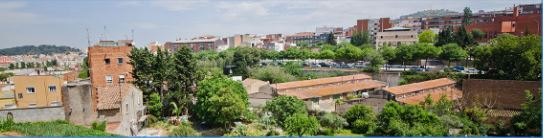
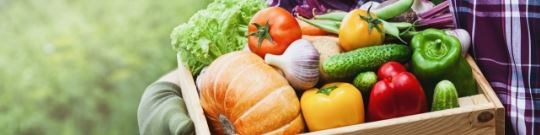

ASSISTEIX A LA PRÒXIMA REUNIÓ
El primer dilluns de cada mes, de 18h a 19:30h
L'Horta del Barri és una comunitat de persones que ens unim a crear un supermercat cooperatiu i participatiu a Lleida dissenyat amb els nostres propis principis. Un nou model de consum on el poder de decisió el tenim totes les persones consumidores i productores d'aliments, no les grans empreses.
Apostem per menjar millor amb productes de més qualitat, més saludables, amb una majoria local i ecològica, i oferint preus justos a qui consumeix i aquí produeix. Perquè volem que la nostra compra contribueixi cada dia a un món millor.
L'Horta del Barri és una cooperativa gestionada de forma democràtica i eficient. Les persones sòcies fan realitat el projecte oferint un temps de treball o una cuota mensual, mentre que un equip de treballadors/es gestionen el dia a dia de la cooperativa. D'aquesta manera podem oferir preus més econòmics i crear una comunitat de persones compromeses amb la seva pròpia alimentació
Els objectius de la creació d'aquesta pàgina web són:
1. Crear teixit social i veïnal per fer créixer encara més el barri
2. Donar a conèixer la cooperativa, així com informació i notícies sobre les novetats de la cooperativa
3. Crear tendència per a que la gent es sumi a consumir productes ecològics i de proximitat.
4. Venda de productes ecològics i de proximitat.
5. Crear un rebost per autoproveir als socis de la cooperativa
Dilluns a divendres: 10h a 14h30 - 16h30 a 20
Dissabte: 10h a 14h
Ens trobem a l'Avinguda les Garrigues 26, a Lleida.
- Accés en cotxe: Estem treballant per poder oferir un parking
- Accés en bicicleta: Disposem d'aparcabicis
- Accés en transport públic: Línea 6,7,9 d'autobusos
Un supermercat col·lectiu a mans de la nostra gent
El primer dilluns de cada mes, de 18h a 19:30h